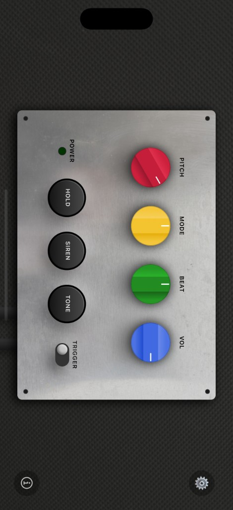

Authentic analog character
Carefully tuned waveforms, saturation, and modulation to sit like a real hardware siren in the mix.
The Legendary Dub Siren, In Your Pocket.
Inspired by classic Jamaican sound systems, Dub Siren captures the raw, hands‑on feel of hardware siren boxes – tuned for live performance and studio sessions.

Key Features & Sound
Dial in siren sweeps, trigger stabs, and evolving textures that cut through any sound system – without fighting your setup.
Carefully tuned waveforms, saturation, and modulation to sit like a real hardware siren in the mix.
Switch between sine, square, triangle, and sawtooth tones with instant feedback from the MODE and TONE controls.
Tap, latch, or hold notes using dedicated TRIGGER, SIREN, and HOLD controls for expressive performance.
Shape evolving sweeps and patterns with BEAT speed and PITCH range that stay playable even at extremes.
Quickly match levels to your rig with a global VOL knob and visual feedback, ready for club or studio.
Fast, tactile interface with large controls that feel at home next to your mixer, delays, and tape echo.
How it works